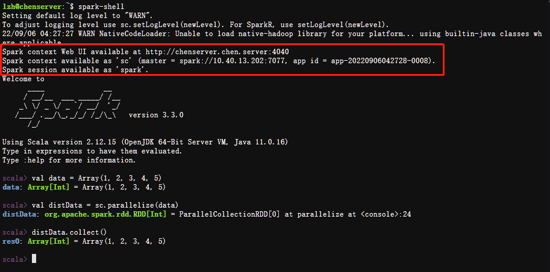

Scala使用说明
在Notebook中使用Scala Kernel
目前服务器上的Jupyter Scala Kernel仍在试验阶段，可以使用其运行一些Scala的简单代码，加载Scala基础库，但是还未安装Spark的Scala接口。未来如果配置完成，会更新此文档。
使用spark-shell
spark-shell是spark启动的交互模式的Scala语言命令行，在输入命令后可以立刻查看结果
注意：pyspark中自带了名为spark的SparkSession和sc的SparkContext，无需也不能额外创建

使用Ctrl+D退出Spark Shell
使用sbt打包Scala程序后spark-submit
https://spark.apache.org/docs/3.0.1/quick-start.html#self-contained-applications
目前sbt虽然安装了但是访问权限有问题可能还无法使用，如果有同学愿意帮忙配置请联系老师或管理员。